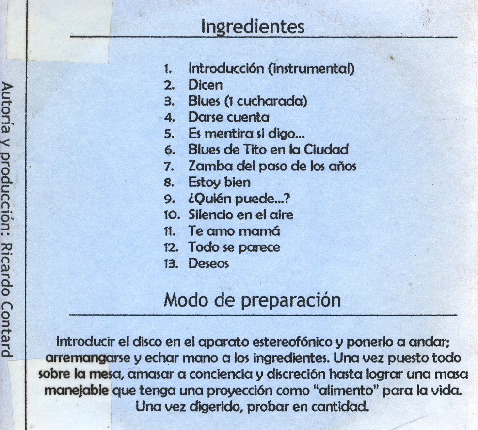

Sorry, your browser doesn't support html5!
Intro
Dicen
Blues (II)
Darse cuenta
Es mentira si digo
Blues de la ciudad
Zamba del paso de los años
Estoy bien
Quién puede
Silencio en el aire
Te amo mamá
Todo se parece
Deseos
